整体是怎么来的
这15个adapter,每一个都是对一个真实开源trading AI项目(LLM agent、强化学习、遗传算法、因子挖掘等不同范式)的薄封装,统一翻译成
Q1(买卖决策)、Q2(市场情绪/风险)、Q3(alpha信号)、Q4(组合配置)、Q5(回测验证)
这5种标准输出schema。先做了一次轻量可跑性体检(22/22探测成功),再跑了一批真实观测(今天的快照 + 5个历史交易日,覆盖10只股票+12资产组合),
最后在这292条真实数据上跑了下面5个分析实验——全程没有编造过任何数字,没有做过实盘交易。
1 Adapter Coverage Audit 能力覆盖审计
怎么做的
对每个adapter,交叉核对三样东西是否一致:代码里声称能回答哪些问题(questions_answered类属性)、
代码里真的写了处理逻辑的问题(静态扫描源码,不执行)、硬盘上results/目录里真的产出过结果的问题。
三者不一致的地方全部列出来,不隐藏。
为了回答什么
15个adapter实际能力和它们自己的声明是否对得上?Q1-Q5这套统一schema,是不是真的能装下这15个五花八门的项目?
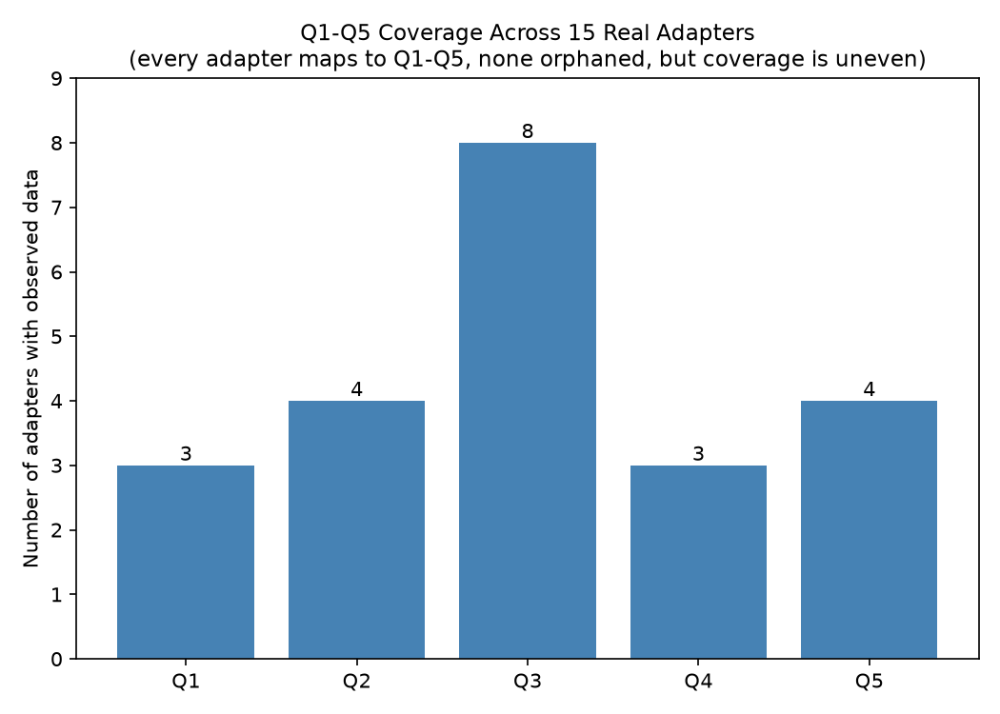
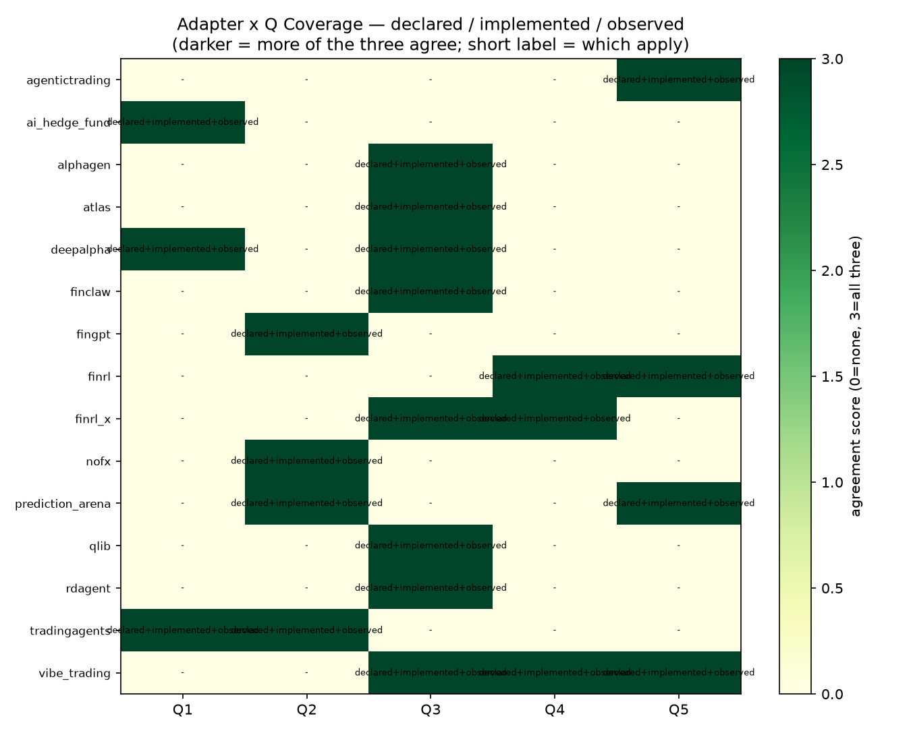
结果
| 问题 | Q1 | Q2 | Q3 | Q4 | Q5 |
|---|---|---|---|---|---|
| 覆盖adapter数 | 3 | 4 | 8 | 3 | 4 |
结论
15个adapter结构上100%都能装进Q1-Q5,没有一个能力"无处安放"——但覆盖极不均匀,Q3(找信号)是Q1/Q4的2.7倍,
暴露出这批开源项目本身偏重"因子挖掘"这个赛道。另外还发现两处schema"装得进但装不满"的问题:
bull_case/bear_case字段几乎没人用,Q4Portfolio缺ticker字段、Q5Backtest连date都没有,
导致后面实验4里37%的矛盾案例只能做"尽力而为"对齐。
2 Secondary-Field Value 次要字段价值
怎么做的
把每个问题的字段拆成"标题字段"(如action=BUY/SELL)和"次要字段"(如理由、证据、风险等级),统计次要字段实际填充率; 再用一个12类关键词词典(momentum/valuation/sentiment/risk等)把reasoning、drivers、supporting_evidence这类自由文本粗略打上标签。
为了回答什么
如果只看BUY/SELL这种标题字段做对比,会丢掉多少真实存在的信息?
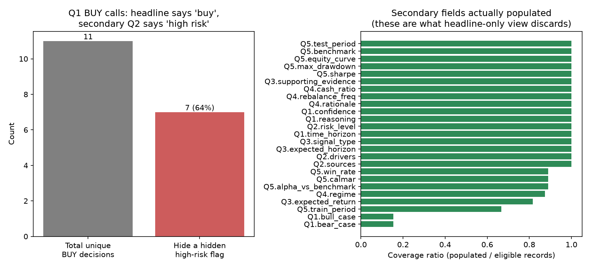
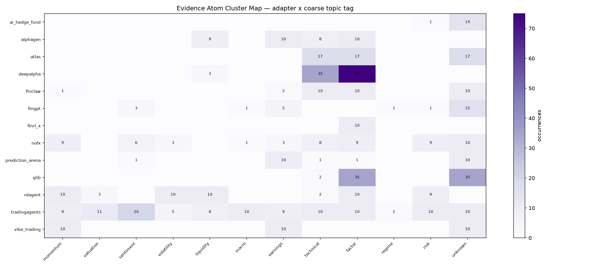
结果
reasoning/drivers/supporting_evidence三个字段100%被填写bull_case/bear_case只有15.4%被填写,基本是摆设- 11次唯一的BUY决策里,7次(64%)背后藏着另一个adapter给出的高风险判断——纯headline对比完全看不到
- 22个次要字段里,真正被下游规则/融合/校准逻辑用上的只有8个,其余14个只统计过覆盖率,没参与任何判断
结论
压缩成headline确实会丢信息,但丢失不是均匀的——更隐蔽的丢失是"语义"而不是"内容":9个adapter的confidence/strength字段 用的是完全不同的计算公式,只看数字会误以为它们可比,其实不然(详见实验3)。
3 Confidence Calibration 信心校准
怎么做的
用yfinance拉取真实历史价格,给每条"说BUY/SELL/LONG/SHORT"的记录算出1天/5天/20天后的真实涨跌, 和adapter自报的confidence/strength分桶比对,"信心-实际命中率"的差就是校准误差。
为了回答什么
adapter说"我有97%把握"的时候,是不是真的97%次都对?这些confidence/strength数字到底是怎么算出来的?
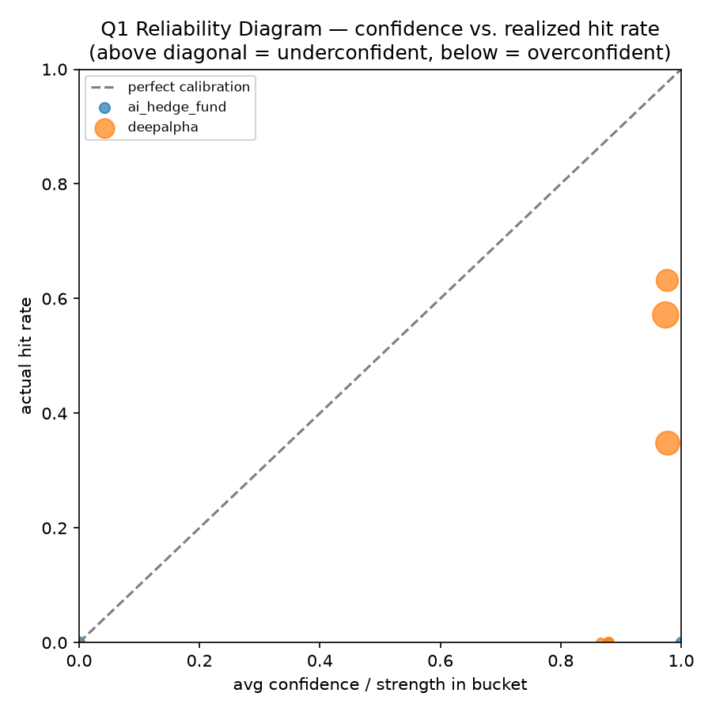
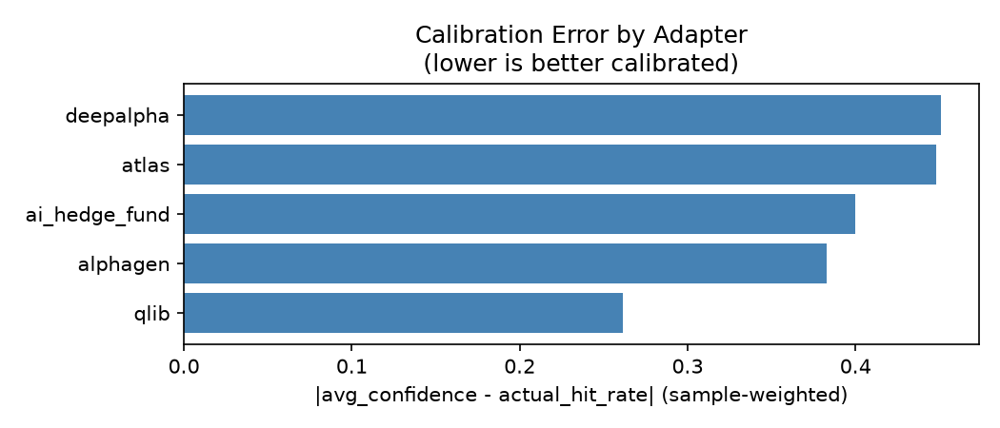
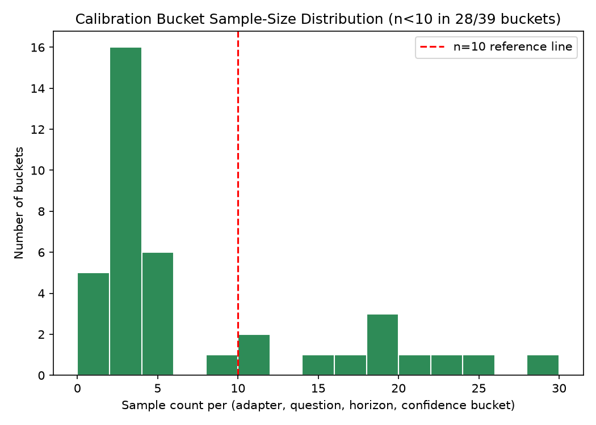
结果
| adapter | 字段计算原理(挖出来的,不是文档里写的) | 典型表现 |
|---|---|---|
| deepalpha (Q1) | 两个模型(XGBoost+LightGBM)预测得像不像 | 信心0.97,5天命中率仅32%(全表最差) |
| qlib (Q3) | 今天这只票的因子值排名有多极端 | 满信心档(1.0)命中率仅25% |
| tradingagents (Q1) | 写死的映射表(buy→0.85),不是真算出来的 | 暂无可打分样本 |
结论
自报信心系统性地不可信,而且这不是adapter"说谎",是这些数字从设计上就没打算回答"我对不对"这个问题。样本量目前还偏小(72%的分桶<10个样本),结论方向可信但精度有限。
4 Cross-Agent Contradiction Detection 跨Agent矛盾检测
怎么做的
8条规则(由你在最初任务里逐字指定,不是我们反推或引用文献得出的),在同一(股票,日期)上比对不同adapter的输出, 命中即记一条案例。Q1/Q2/Q3三者都带ticker+date可以精确对齐;Q4/Q5缺这些字段,只能按同一次比较批次(task_id)"尽力而为"对齐。
为了回答什么
不同adapter对同一件事的判断,到底有多少是互相打架的?
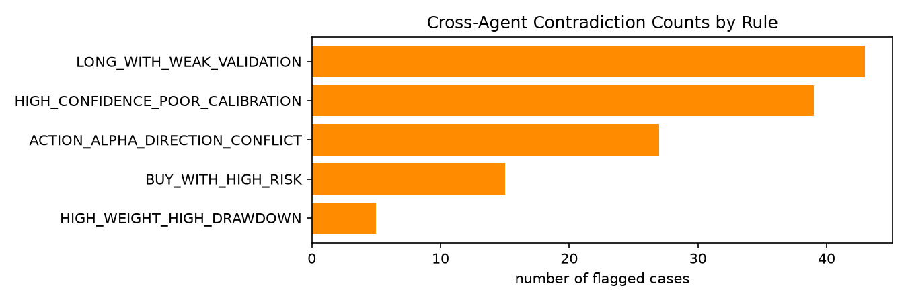
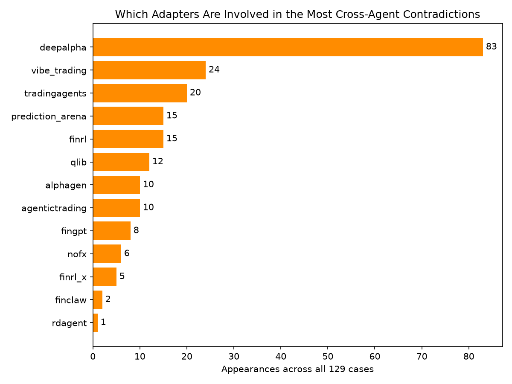
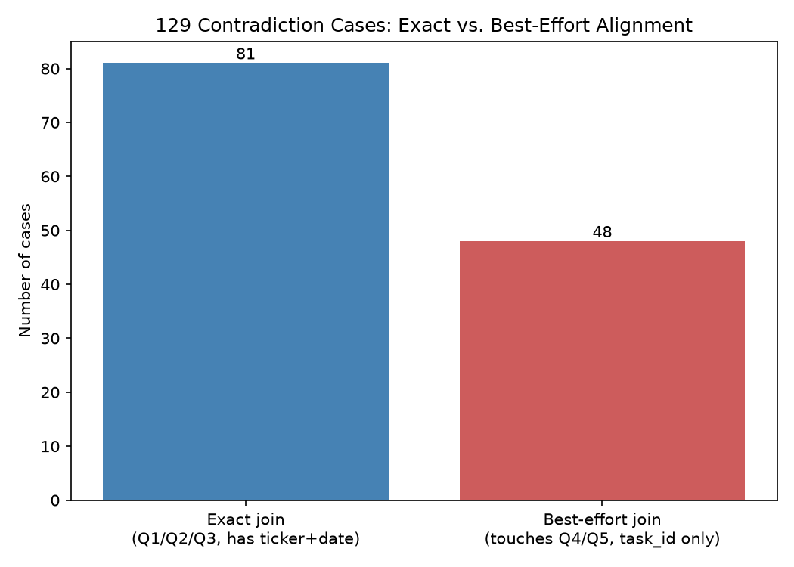
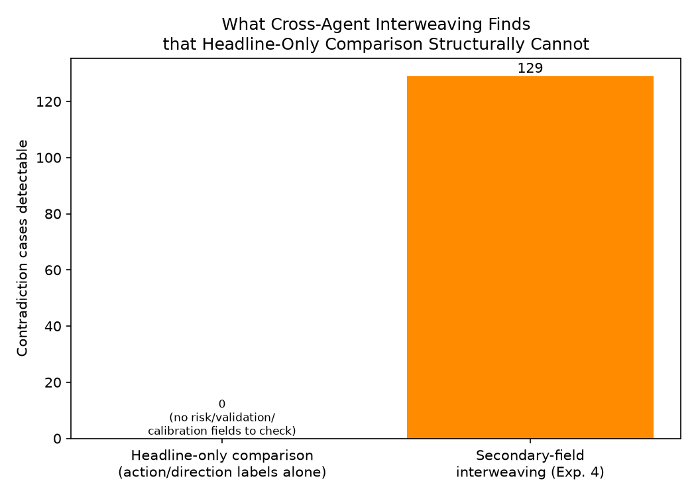
结果
| 规则 | 案例数 |
|---|---|
| LONG_WITH_WEAK_VALIDATION(看多但回测验证薄弱) | 43 |
| HIGH_CONFIDENCE_POOR_CALIBRATION(高信心却历史不准) | 39(100%来自deepalpha) |
| ACTION_ALPHA_DIRECTION_CONFLICT(买卖判断vs信号方向冲突) | 27(其中4条是deepalpha自己跟自己矛盾) |
| BUY_WITH_HIGH_RISK(买入却被判高风险) | 15 |
| HIGH_WEIGHT_HIGH_DRAWDOWN(高仓位伴随严重回撤) | 5 |
结论
129条真实矛盾案例,不是偶发个案。纯粹比对BUY/SELL这种标题标签,永远发现不了这些矛盾(见上面0 vs 129那张图)——必须交织次要字段才行。
5 Fusion Ablation 融合方式对比
怎么做的
同一批(股票,日期)信号,分别用①简单投票 ②按信心加权投票 ③综合考虑风险/验证/矛盾/证据一致性的interwoven加权投票, 合成一个最终决策,再用真实历史收益率给三种方法打分。
为了回答什么
更复杂、"更聪明"的融合方法,是不是真的比简单投票更准?
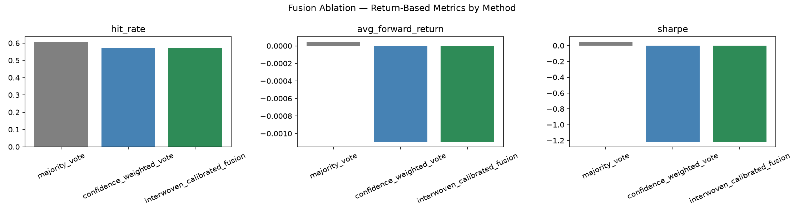
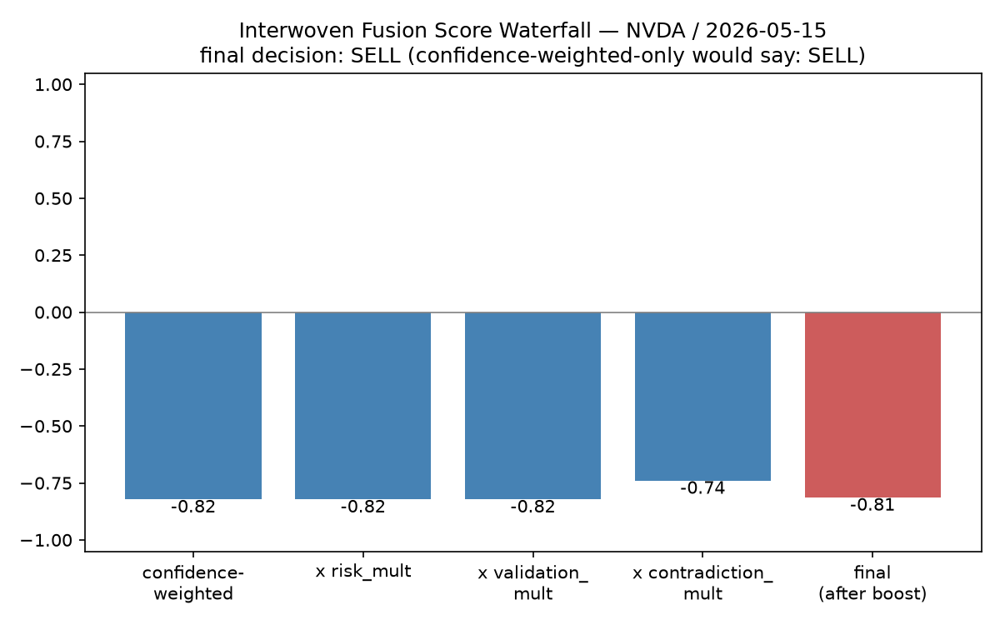
结果
| 方法 | 命中率 |
|---|---|
| majority_vote(简单投票) | 61% |
| confidence_weighted_vote(信心加权) | 57% |
| interwoven_calibrated_fusion(综合考虑) | 57%(和加权投票完全相同) |
结论
目前"越复杂越好"的假设不成立,但根因已经具体定位到代码层面:interwoven目前没有把adapter自己的历史校准表现折算进投票权重——这是明确、可执行的下一步修复项,不是玄学。
综合三个核心问题
| 问题 | 能否回答 | 要点 |
|---|---|---|
| 15个真实adapter能否被Q1-Q5统一覆盖? | 能 | 结构上100%覆盖,但分布严重不均(Q3=8 vs Q1/Q4=3各) |
| 压缩成headline会丢失什么? | 能,且已量化 | 64%的BUY决策藏着风险警示;更危险的是"语义"层面的丢失(同名字段测量完全不同的东西) |
| 交织次要字段能否发现headline看不到的冲突/风险/过度自信? | 能,证据最强 | 129条真实矛盾案例,纯headline对比结构上不可能发现任何一条 |
局限与下一步
- 校准/融合实验样本量仍偏小(28/39个校准分桶<10样本,融合只在40个组上评估)——需要更多历史批次
- Q4/Q5缺ticker/date字段,37%的矛盾案例是"尽力而为"对齐,不是精确对齐
- interwoven融合还没接入"校准可靠度加权",这是让实验5核心论点站得住的关键待办
- 还没有任何论文正文——现在是扎实的实验基础设施+真实发现,写作(intro/related work/discussion)完全空白
完整数据见本目录下所有*.csv,详细问答记录见 EXPERIMENT_QA_NOTES.md 和 PAPER_FINDINGS.md。